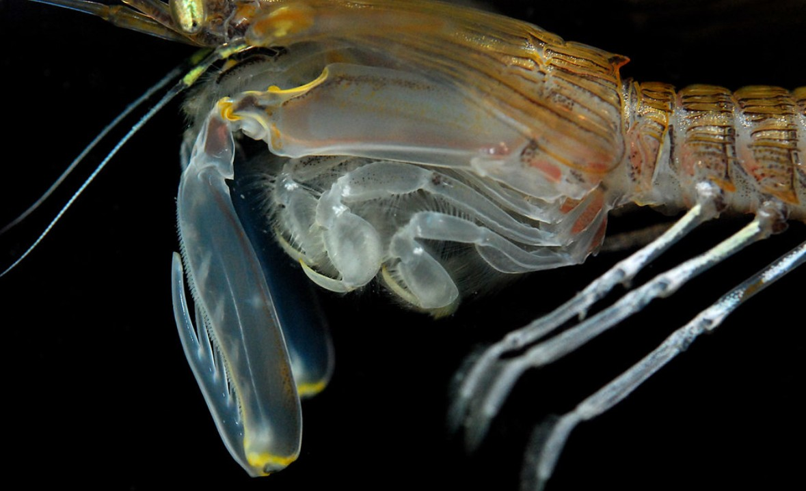

Bio-Inspired Impact Resistance: Lessons from the Mantis Shrimp
The mantis shrimp delivers one of the fastest and most powerful strikes in nature. This post breaks down the biomechanics behind it and explores how its structure could inspire engineered materials.
Read more →